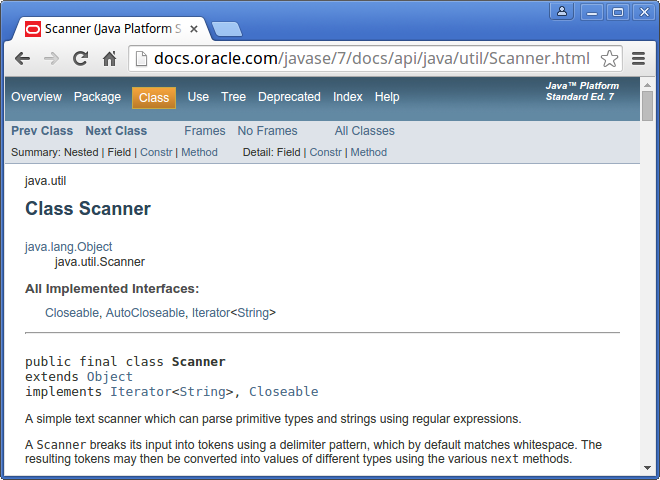

Notices
This is the free HTML version of
We are working on making this site accessible in compliance with Web Content Accessibility Guidelines. If you have suggestions for improvements, please file an issue.
Are you using one of our books in a class? We'd like to know about it. Please consider filling out this short survey.
19 Javadoc
Java programs have three types of comments:
- End-of-line comments:
-
These start with
//and generally contain short phrases that explain specific lines of code. - Multiline comments:
-
These start with
/*and end with/, and are typically used for copyright statements. - Documentation comments:
-
These start with
/**and end with/, and describe what each class and method does.
End-of-line and multiline comments are written primarily for yourself. They help you remember specific details about your source code. Documentation comments, on the other hand, are written for others. They explain how to use your classes and methods in other programs.
A nice feature of the Java language is the ability to embed documentation in the source code itself. That way, you can write it as you go, and as things change, it is easier to keep the documentation consistent with the code.
You can extract documentation from your source code, and generate well-formatted HTML pages, using a tool called Javadoc. This tool is included with the JDK, and it is widely used. In fact, the official documentation for the Java library (https://thinkjava.org/apidoc) is generated by Javadoc.
19.1 Reading Documentation
As an example, let’s look at the documentation for Scanner, a class we first used in Section 3.2. You can find the documentation quickly by doing a web search for “Java Scanner”. Figure 19.1 shows a screenshot of the page.

Scanner.
Documentation for other classes uses a similar format. The first line is the package that contains the class, such as java.util. The second line is the name of the class. The “All Implemented Interfaces” section lists some of the functionality a Scanner has.
The next section of the documentation is a narrative that explains the purpose of the class and includes examples of how to use it. This text can be difficult to read, because it may use terms you have not yet learned. But the examples are often very useful. A good way to get started with a new class is to paste the examples into a test file and see if you can compile and run them.
One of the examples shows how you can use a Scanner to read input from a String instead of System.in:
String input = "1 fish 2 fish red fish blue fish";
Scanner s = new Scanner(input);After the narrative, code examples, and other details, you will find the following tables:
- Constructor Summary:
-
Ways of creating, or constructing, a
Scanner. - Method Summary:
-
The list of methods that the
Scannerclass provides. - Constructor Detail:
-
More information about how to create a
Scanner. - Method Detail:
-
More information about each method.
For example, here is the summary information for nextInt:
public int nextInt()
Scans the next token of the input as an int.The first line is the method’s signature, which specifies the name of the method and its parameters (none). The type it returns (int) is not part of the signature. The next line is a short description of what it does.
The “Method Detail” explains more:
public int nextInt()
Scans the next token of the input as an int.
An invocation of this method of the form nextInt() behaves in
exactly the same way as the invocation nextInt(radix), where
radix is the default radix of this scanner.
Returns:
the int scanned from the input
Throws:
InputMismatchException - if the next token does not match
the Integer regular expression, or is out of range
NoSuchElementException - if input is exhausted
IllegalStateException - if this scanner is closedThe “Returns” section describes the result when the method succeeds. In contrast, the “Throws” section describes possible errors and exceptions that may occur. Exceptions are said to be thrown, like a referee throwing a flag, or like a toddler throwing a fit.
It might take you some time to get comfortable reading documentation and learning which parts to ignore. But it’s worth the effort. Knowing what’s available in the library helps you avoid reinventing the wheel. And a little bit of documentation can save you a lot of debugging.
19.2 Writing Documentation
As you benefit from reading good documentation, you should “pay it forward” by writing good documentation.
Javadoc scans your source files looking for documentation comments, also known as “Javadoc comments”. They begin with /** (two stars) and end with / (one star). Anything in between is considered part of the documentation.
Here’s a class definition with two Javadoc comments, one for the Goodbye class and one for the main method:
/**
* Example program that demonstrates print vs println.
*/
public class Goodbye {
/**
* Prints a greeting.
*/
public static void main(String[] args) {
System.out.print("Goodbye, "); // note the space
System.out.println("cruel world");
}
}The class comment explains the purpose of the class. The method comment explains what the method does.
Notice that this example also has an end-of-line comment (//). In general, these comments are short phrases that help explain complex parts of a program. They are intended for other programmers reading and maintaining the source code.
In contrast, Javadoc comments are longer, usually complete sentences. They explain what each method does, but they omit details about how the method works. And they are intended for people who will use the methods without looking at the source code.
Appropriate comments and documentation are essential for making source code readable. And remember that the person most likely to read your code in the future, and appreciate good documentation, is you.
19.4 Example Source File
Now let’s take a look at a more complete example. The code for this section is in the appb directory of ThinkJavaCode2. See page for instructions on how to download the repository.
Professional-grade source files often begin with a copyright statement. This text spans multiple lines, but it is not part of the documentation. So we use a multiline comment (/*) rather than a documentation comment (/**). Our example source file, Convert.java, includes the MIT License (https://opensource.org/licenses/MIT):
/*
* Copyright (c) 2019 Allen Downey and Chris Mayfield
*
* Permission is hereby granted, free of charge, to any person obtaining a copy
* of this software and associated documentation files (the "Software"), to deal
* in the Software without restriction, including without limitation the rights
* to use, copy, modify, merge, publish, distribute, sublicense, and/or sell
* copies of the Software, and to permit persons to whom the Software is
* furnished to do so, subject to the following conditions:
*
* The above copyright notice and this permission notice shall be included in
* all copies or substantial portions of the Software.
*
* THE SOFTWARE IS PROVIDED "AS IS", WITHOUT WARRANTY OF ANY KIND, EXPRESS OR
* IMPLIED, INCLUDING BUT NOT LIMITED TO THE WARRANTIES OF MERCHANTABILITY,
* FITNESS FOR A PARTICULAR PURPOSE AND NONINFRINGEMENT. IN NO EVENT SHALL THE
* AUTHORS OR COPYRIGHT HOLDERS BE LIABLE FOR ANY CLAIM, DAMAGES OR OTHER
* LIABILITY, WHETHER IN AN ACTION OF CONTRACT, TORT OR OTHERWISE, ARISING FROM,
* OUT OF OR IN CONNECTION WITH THE SOFTWARE OR THE USE OR OTHER DEALINGS IN THE
* SOFTWARE.
*/Import statements generally follow the copyright text. After that, we can define the class itself and begin writing the documentation (/**):
import java.util.Scanner;
/**
* Methods for converting to/from the metric system.
*
* @author Allen Downey
* @author Chris Mayfield
* @version 6.1.5
*/
public class Convert {A common mistake that beginners make is to put import statements between the documentation and the public class line. Doing so separates the documentation from the class itself. To avoid this issue, always make the end of the comment (the /) “touch” the word public.
This class has two constants and three methods. The constants are self-explanatory, so there is no need to write documentation for them:
public static final double CM_PER_INCH = 2.54;
public static final int IN_PER_FOOT = 12;The methods, on the other hand, could use some explanation. Each documentation comment includes a description, followed by a blank line, followed by a @param tag for each parameter, followed by a @return tag:
/**
* Converts a measurement in centimeters to inches.
*
* @param cm length in centimeters
* @return length in inches
*/
public static double toImperial(double cm) {
return cm / CM_PER_INCH;
}/**
* Converts a length in feet and inches to centimeters.
*
* @param feet how many feet
* @param inches how many inches
* @return length in centimeters
*/
public static double toMetric(int feet, int inches) {
int total = feet * IN_PER_FOOT + inches;
return total * CM_PER_INCH;
}The main method has a similar documentation comment, except there is no @return tag since the method is void:
/**
* Tests the conversion methods.
*
* @param args command-line arguments
*/
public static void main(String[] args) {
double cm, result;
int feet, inches;
Scanner in = new Scanner(System.in);
// test the Imperial conversion
System.out.print("Exactly how many cm? ");
cm = in.nextDouble();
result = toImperial(cm);
System.out.printf("That's %.2f inches\n", result);
System.out.println();
// test the Metric conversion
System.out.print("Now how many feet? ");
feet = in.nextInt();
System.out.print("And how many inches? ");
inches = in.nextInt();
result = toMetric(feet, inches);
System.out.printf("That's %.2f cm\n", result);
}Here are two ways you can run the Javadoc tool on this example program:
From the command line, go to the location for Convert.java. The
-doption ofjavadocindicates where to generate the HTML files:javadoc -d doc Convert.javaFrom DrJava, click the Javadoc button on the toolbar. The IDE will then prompt you for a location to generate the HTML files.
For more examples of what you can do with Javadoc comments, see the source code of any Java library class (e.g., Scanner.java). Section 10.6 explains how to find the source files for the Java library on your computer.
19.5 Vocabulary
- documentation:
-
Comments that describe the technical operation of a class or method.
- Javadoc:
-
A tool that reads Java source code and generates documentation in HTML format.
- signature:
-
The first line of a method that defines its name and parameters.
- tag:
-
A label that begins with an at sign (
@) and is used by Javadoc to organize documentation into sections. - description:
-
The first line of a documentation comment that explains what the class/method does.